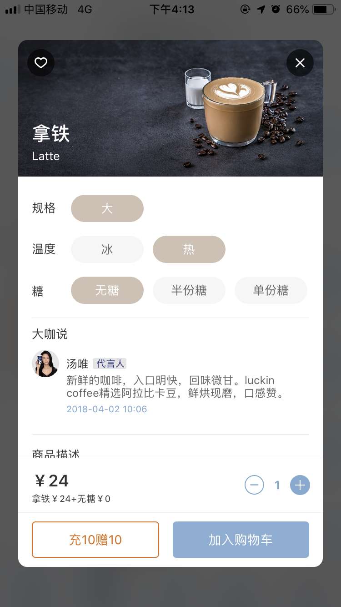

最近，很多客户一直都在问，到底怎么做品牌？
针对这个问题，海右博纳就和你分享一下打造品牌的4S模型:
4S品牌模型由四个部分组成，分别是：超级点子（super idea）、超级口号（super slogan）、超级符号（super logo）和超级营销（super marketing）。
· 超级点子
超级点子即是品牌创意，也是发现新市场机会的过程，通过分析研究，重新定义产品类别与形态，换一种形式和渠道把产品卖给更多的人，从而发现新的市场机会。
·超级口号
超级口号即是广告语，基于消费利益层面，广告语就是给消费者一个购买理由；基于情感沟通层面，广告语就是传递品牌的价值主张。
·超级符号
超级符号即是视觉锤，所有的品牌创意和广告语都离不开视觉锤，因为运用视觉锤是建立品牌一个有效方法（但并不是品牌规划的最终目标），如果说品牌符号是视觉锤，那么品牌创意和口号就是文字钉子，想要把“文字钉子”打进消费者的心里，就要借助“视觉锤”工具，把钉子植入潜在顾客的心智。
·超级营销
很多客户认为做品牌的最终目标就是输出“一句广告文案”，“一个logo标志”，或者“一个产品包装”等，我想说，所有的品牌广告语，logo，以及其它视觉设计，其实都是服务于营销行为的，如果做品牌只止于此（品牌视觉层面），那么品牌也会亡于此。所以，做品牌是一门持久战，做品牌不能脱离营销，因为品牌是静态的，营销是动态的，只有动静结合，方能所向披靡。
那么，品牌营销这么重要，要怎么做呢？
海右博纳认为所有营销都离不开4P营销原理，它将是解决营销的问题的最高纲领和执行标准。
那么这时候，可能就会出现质疑的声音：“4P营销不是最传统的营销理论吗？现在都已经过时了，不适合新时代的营销·· · · · · · ”
面对这些声音，我们只能说：“你在否定4P理论，但是你又在无形中遵守着4P理论，你们是矛盾的。”

为什么怎么说呢？我们先来看一下到底什么是4P营销理论。
4P营销理论产生于20世纪60年代的美国，随着著名营销学者麦卡锡的营销组合理论的提出而出现的。4P营销理论是最基础的营销理论原理，第一个P是指Product（产品），第二个P是指Price（价格），第三个P 是指Place（渠道），最后一P就是Promotion（推广）。

现在你看看，你能说你的哪一件营销事件，是脱离这4P之外的？
不管你做什么，你首先要有产品，你对产品的思考就是基于你对整个品牌营销规划的思考，你做那个产品，不做那个产品，定价是多少，渠道在哪里，如何做推广，怎么让让消费者知道我们等，都是基于4P营销。
所以不管你做什么营销，其实就是这4件事情，首先决定你的产品，然后卖多少钱，建立渠道，在讨论推广。其实很多时候客户比我们更擅长营销4P，他们知道自己卖什么赚钱，卖多少钱适合市场，需要通过哪些资源开通多方面渠道。只是在推广层面，我们比客户更有发言权，毕竟专业的事情交给专业的人来做。
接下来，我们通过一个案例，来看看4P理论如何造营销实战中发挥巨大作用的。
今天我们说说LUCKIN COFFEE瑞辛咖啡的案例，瑞幸是一个从不被叫好的“互联网咖啡”，却在短短的三年时间内，成功上市的品牌。

作为中国新零售咖啡的代表，我们利用“4P理论”来系统的分析下瑞幸咖啡火爆背后的可能原因。
1. 产品层面：好的产品是一切商业模式的起点
同样的是咖啡，如何为消费创造更好的价值，是品牌所要思考的，瑞辛咖啡通过“选用阿拉比卡咖啡豆”“由三位WBC世界咖啡团队精心拼配”“选用世界销量第一的瑞士雪莱咖啡机”等优势特色，从而给用户带来口感醇厚且更加稳定的好咖啡。

2.价格层面：差异化价格，不玩套路
在一个高度透明化下的市场，任何价格差异都逃不过用人民币投票的消费者，好的定价除了能做到吸引消费者以外，还能构建起自己强大的价格壁垒。
| 差异化定价：
消费领域的咖啡市场，高端市场被星巴克、Costa（一杯咖啡的价格在30~40元）占领，低端市场被肯德基、麦当劳（10~20元）等快餐咖啡占领。而瑞幸咖啡一杯中杯美式的价格是21元，中杯拿铁的价格是24元，介于两者之间，平均要比星巴克便宜5~10元。
| 运用一价定律消灭价格歧视：
你是否也像我一样，对星巴克蛋疼的中杯、大杯、超大杯叫法感到蛋疼？
（但商家的套路不会告诉你：三杯中杯拿铁的总价格比两杯大杯拿铁的总价格高出了16元，但总量却少了。）
瑞幸咖啡为了避免消费者陷入不知道该怎么选、选了又担心被套路，对于所有杯型，统一为大杯，对于价格，也只根据咖啡种类的不同，简单的定为21、24、27元三种。


3. 渠道层面：优化交易结构，数据指导运营
作为中国新零售咖啡的代表，瑞幸咖啡在信息流、资金流、物流这三个维度上，对传统的咖啡业态进行了升级。
| 信息流:
商品信息、门店信息、活动信息，除了可以通过线下门店获取以外，还能通过瑞幸自己的APP来实现。
通过打通线上与线下，一定程度上消灭了信息不对称，让用户在需要购买咖啡时，不是在找，而是直接下单。
| 资金流
与普通咖啡厅不同的是：瑞幸咖啡没有收银台，也没有收银员，点单和支付都在线上完成。资金流的线上化，一方面节约了人工成本，另一方面也积累了用户数据。
| 物流:
受物流速度以及咖啡这个特殊产品的影响，在传统咖啡门店场景中，用户获取咖啡的渠道只能通过线下门店购买。
瑞幸咖啡则有门店自取与外卖配送两种模式，通过与顺丰的合作再加上密集型的开店策略，保证了咖啡在制作完成的30分钟内即可送达，如果送达超时，可以申请直接免单。

4. 营销层面：全方位的线上线下联动营销
瑞幸咖啡通过线上与线下相结合的营销手段，将前期产品积累的足够势能，在短短5个月的时间内，将一个新品做到了从0到爆。
| 线上的广告投放
通过基于微信的LBS定位，精准匹配门店与用户的地理位置关系。即一旦某个写字楼开了瑞幸咖啡，那个这个门店所能覆盖的用户都将有可能看到瑞幸在微信端投放的广告，反复进行门店周边的吸量。
| 线下的广告投放
通过电梯广告的不断宣传来提升知名度和市场渗透率，以达到宣传品牌，占领用户心智的目的。（你可能也见到了你所在的写字楼电梯间，甚至在很多小区的电梯里，都是小蓝杯的广告。）
| 裂变营销：福利补贴，成功吸客
简单有效的拉新推广活动，像新客首单免费，老客户介绍一个新客户，可以再奖励一杯，买2赠1、买5赠5等活动。
这其中最核心的是裂变拉新的玩法，通过老带新，新老用户都有奖励，奖励会激发着新客再带新客，从而形成一个良性的内循环增长体系。

从瑞辛咖啡的案例看来，品牌的成功还是离不开营销理论框架。所以，任何一个企业在打造品牌的时候，都不应该单纯的以为仅仅是一句口号或者一个设计，做品牌还涉及营销策略的问题。
而这个也是海右博纳一直所坚持的初衷：不只是设计，更是营销！


济南海右博纳品牌营销咨询有限公司
Copyright 2001-2019 All Rights Reserved Sivibrand.
王伟品牌顾问微信